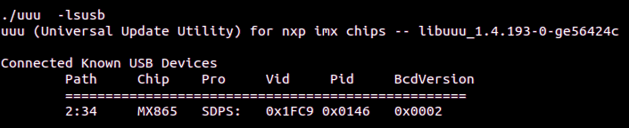

NavQPlus set up for CogniPilot with ROS 2 Humble
Looking for instructions on how to also install on a development computer?
Click here to get instructions on how to setup and configure a development computer.
Already previously followed all the steps to flash and configure the image on the NavQPlus and want to jump to installing CogniPilot on it?
About this guide
These directions are written for someone with experience with embedded Linux and basic embedded computers.
Step-by-step overview
- Download the pre-built latest image with Ubuntu1 22.04 and ROS 23 Humble, exact instructions for that release image are included on the release documentation to use in conjunction with this guide.
- Extract the image
navqplus-image-<version>.wicfrom the compressed downloaded filenavqplus-image-<version>.wic.zstdand flash it to the EMMC, exact copy and paste instructions are on the release page. - Log in for the first time by connecting to another computer using the USB to UART adapter, ethernet adapter or centermost (USB 2) USB-C® port.2
- Configure WiFi, System User Name and Password.
- Connect to NavQPlus over WiFi
- Install CogniPilot by running the included installer script.
Flashing the eMMC
To flash the eMMC on the NavQPlus use the uuu tool as part of the downloadable assests from the release.
Once uuu has downloaded make sure to set it as executable.
find the boot switches on the NavQPlus and flip them to the "Flash" mode.
Then, connect NavQPlus to the computer with the downloaded release using the leftmost (USB 1) USB-C® port and the two flash status lights should light up.
Flash eMMC hookup and status lights.

Make sure that the NavQPlus is recognized by uuu.
Found device with uuu.

If it shows that a device is connected, continue to flashing. To flash the board, use the general command below or copy and paste the specific command from the release.
sudo ./uuu -b emmc_all navqplus-image-<version>.bin-flash_evk navqplus-image-<version>.wic
Once this process has finished, make sure that the flash was successful. If so, configure the boot switches to boot from eMMC.
Successful eMMC flash.

uuu gave a weird output abort message after flashing, did it work correctly?
There is a know issue where uuu will throw an assertion failed error as seen below, however, the image is flashed correctly and the remaining steps setup and install steps can be followed.

Boot Switches
NavQPlus can be configured to boot from either SD card or eMMC. It also has a flash mode that allows for to flashing either the eMMC or SD card over USB-C®. See the table below for the boot switch configuration. Note we suggest to only flash and run from eMMC and leave the SD card for external storage.
| Mode | Switch 1 | Switch 2 |
|---|---|---|
| SD | ON | ON |
| eMMC | OFF | ON |
| Flash | ON | OFF |
Log in for the first time
Power on the NavQPlus by plugging in a USB-C® cable to the centermost (USB 2) USB-C® port or the 5 pin JST-GH power port if not powering over the centermost (USB 2) USB-C® port. NavQPlus will boot, and display that it is fully booted with the status LEDs on board. The 3 LEDs by the USB1 port should be on, as well as two LEDs next to the CAN bus connectors.
To log into NavQPlus, choose between using the included USB to UART adapter, Industrial Ethernet, or USB-C® with gadget ethernet mode. The default username/password combo is as follows:
Username: user
Password: user
USB to UART adapter
Connect the included USB to UART adapter to the UART2 port on the NavQPlus, and open a serial console application with a baud rate of 115200 8N1. Press enter if there is no output on the screen to get a log-in prompt.
How to close cleanly out of screen.
To exit screen cleanly when done press simultaneously Ctrl Shift A followed by typing k then y.
Ethernet
Connect the included IX Industrial Ethernet cable to NavQPlus, and connect the RJ45 connector to another computer, switch, or router on the local network. Log into NavQPlus over SSH.
Changing hostname
Default hostname is imx8mpnavq. The hostname can be changed and is suggested to be changed if running multiple NavQPlus on the same network.
USB-C® Gadget Ethernet
The IP address of the usb0 network interface on NavQPlus is statically assigned to 192.168.186.3. To use the USB-C® gadget ethernet to connect to the NavQPlus, assign a static IP on the connecting computers existing gadget ethernet interface. The network configuration is as follows:
IP Address: 192.168.186.2
Network Mask: 255.255.255.0
Adding the network configuration to Network Manager.

Once USB-C® gadget ethernet interface is set up on the connected computer, connect over SSH.
Changing hostname
Default hostname is imx8mpnavq. The hostname can be changed and is suggested to be changed if running multiple NavQPlus on the same network.
Configuring WiFi, System Hostname, Username or Password
Configuring WiFi on NavQPlus
To connect NavQPlus to a WiFi network, use the nmcli command. The interface is relatively straightforward, to connect with nmcli.
sudo nmcli device wifi connect <network_name> password "<password>"
If struggling to connect to a network, see if the network is visible.
Once connected to the WiFi network the NavQPlus will continue to connect to that network even after a reboot.
What WiFi network is the NavQPlus currently connected to?
To see what WiFi network the NavQPlus is currently connected to run previous command without sudo.
Or if running with sudo it will be the network preceded with a star.
OPTIONAL - Configuring System Hostname, Username or Password
Optionally, to change the default hostname, username, or password, see below.
Change Hostname
Change Username
Danger
Changing the username can be dangerous and possibly result in a broken system state requiring a re-flash.
Change Password
Connecting to NavQPlus over WiFi
Once setup to connect over a local WiFi network, SSH into the NavQPlus.
Changing hostname
Default hostname is imx8mpnavq. The hostname can be changed and is suggested to be changed if running multiple NavQPlus on the same network.
Install CogniPilot through included script
Included in the image is an installation script that auto-updates when run. Before running make sure that the NavQPlus is connected to the internet on a network that allows it to download from github and Ubuntu servers.
In the home directory there is a simple helper script that downloads and runs the latest CogniPilot NavQPlus installer.
Cloning with ssh keys:
If you want to use SSH keys with github on the NavQPlus you must first add or create them on the device. Otherwise you will need to answer n when asked to clone using already setup github ssh keys.
When prompted to choose whether or not to use ssh-keys:
- y to clone with ssh keys, best for development work but only select if ssh keys are already present and setup with GitHub.
- n to clone with https, best for users who do not plan to make modifications or develop.
When prompted to choose whether or not to optimize runtime performance:
It is recommended to select y for runtime optimization when prompted.
When prompted to choose a release:
- airy for a stable non-development release.
- main for active development.
When prompted to choose a platform to build:
- b3rb is an ackermann based mobile robotic platform.
- elm4 is a differential drive based mobile robotic platform.
Does CycloneDDS need configuring?
The NavQPlus Ubuntu 22.04 with ROS 2 Humble image uses CycloneDDS by default. Make sure to edit the default CycloneDDSConfig.xml to only allow the networks that are desired to connector over when trying to get maximal performance. An example of this is using only the WiFi device mlan0 to connect to a ROS 2 Domain. To save performance remove the other default included interfaces eth1 and usb0 by deleting those lines from the NavQPlus local ~/CycloneDDSconfig.xml.